Batallas
Rondas de freestyle y enfrentamientos entre disciplinas, con criterio, energía y respeto por cada lenguaje.
JD STUDIOS / BATALLAS DE BAILE
Un proyecto que abre la escena para las distintas expresiones de la danza y las danzas urbanas, dando un espacio de creación, manifestación y competencia que permite mostrar aquello que no se dice, que se baila.
Conocer la propuesta ↓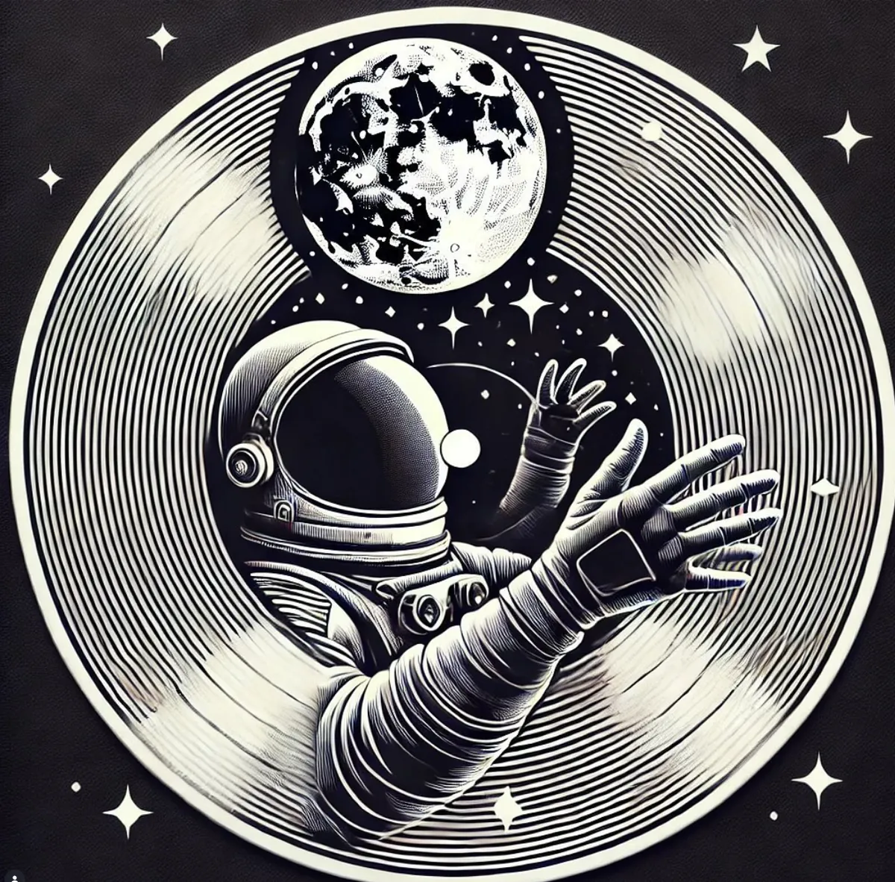
01 / LA PROPUESTA
Skillbattles nace para reunir las expresiones de la danza en un encuentro vivo, diverso e integral. Un espacio donde las crews, bailarines y artistas puedan mostrar su lenguaje, medirse con respeto y compartir con la comunidad.
La pista se convierte en un lugar de escucha: cada batalla abre una conversación y cada cuerpo trae una historia.
//Skill Battles La escena en movimiento
02 / LO QUE SUCEDE
Competencia, encuentro y celebración
en una misma experiencia.
Rondas de freestyle y enfrentamientos entre disciplinas, con criterio, energía y respeto por cada lenguaje.
Presentaciones invitadas para ampliar la mirada y compartir trabajos que están moviendo la escena.
La música sigue cuando termina la ronda. Un cierre para bailar, encontrarse y celebrar lo vivido.
Reconocimientos para quienes convierten su estilo y su presencia en una experiencia para todos.
03 / ARCHIVO SKILLBATTLES
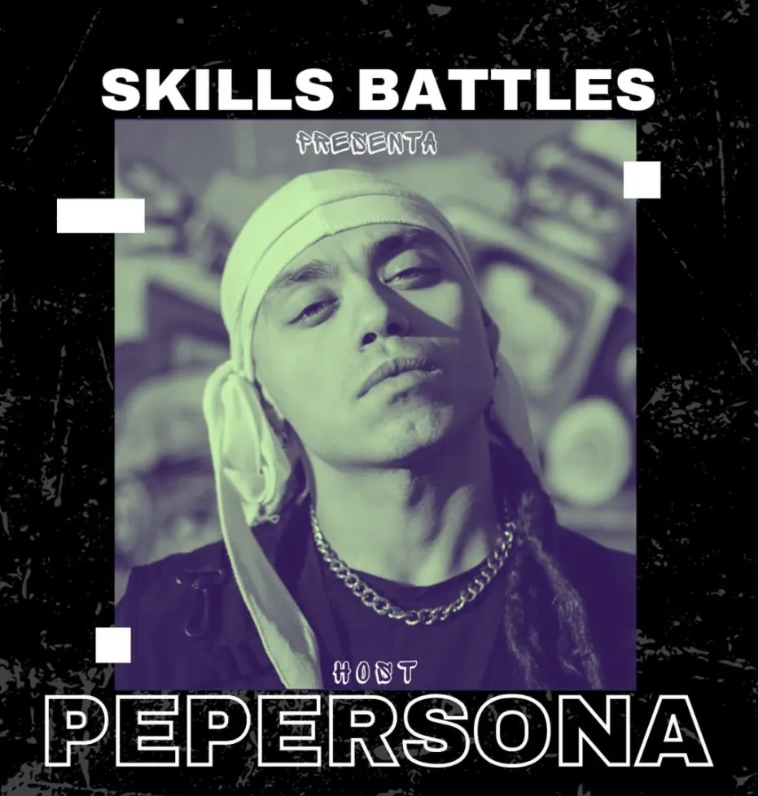
04 / CRONOLOGÍA DE LA ESCENA
Eventos, encuentros y jornadas que han ido construyendo la comunidad de Skill Battles.
Jornada con HH freestyle y 7 to Smoke all style en Trilab, Santiago Centro, junto a invitadxs, DJ Choketz y Pe Persona.
Ver publicación ↗ Ver MUBS ↗Una nueva jornada de freestyle 2.0 en Gym Pionono, precedida por una clase abierta y una ronda de competencia.
Ver publicación ↗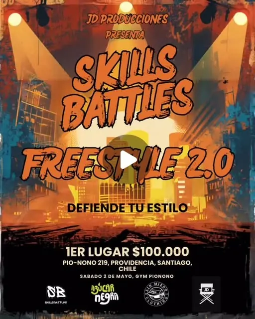
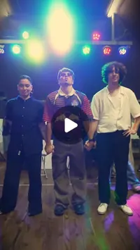
Formato top 32, 1vs1 y dress code denim en Santiago, con un primer premio de $80.000.
Ver publicación ↗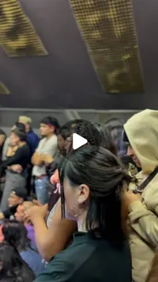
Batalla all style 1vs1 en el marco del Día de los Patrimonios, con más de 20 bailarines reunidos en Metro Quinta Normal.
Ver publicación ↗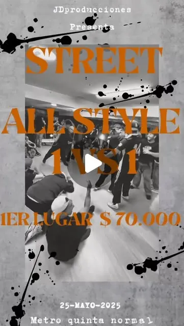
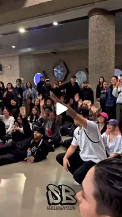
Encuentro en FireStudio con Kurufleiva como jurada, DJ Choketz y Pe Persona en la conducción.
Ver publicación ↗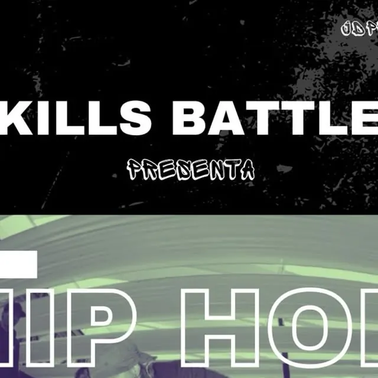
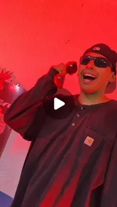
Una jornada de batallas en la Escuela Belén Araya, con DJ Dalo, jurado Seba Dranzer y showcase de Urban Crew.
Ver publicación ↗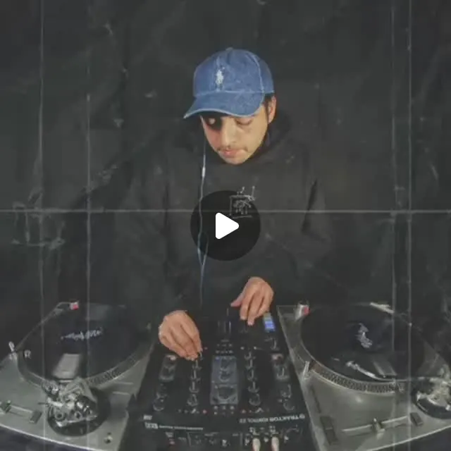
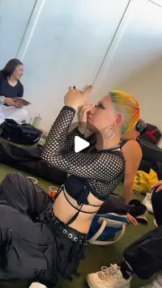
La propuesta se presenta como un encuentro para unir distintas disciplinas, con premios, batallas, fiesta, showcase y artistas invitados.
Ver publicación ↗05 / PRÓXIMO ENCUENTRO
Si bailas, produces, pinchas música, fotografías o quieres ser parte de la producción, queremos escucharte.
Quiero ser parte ↗